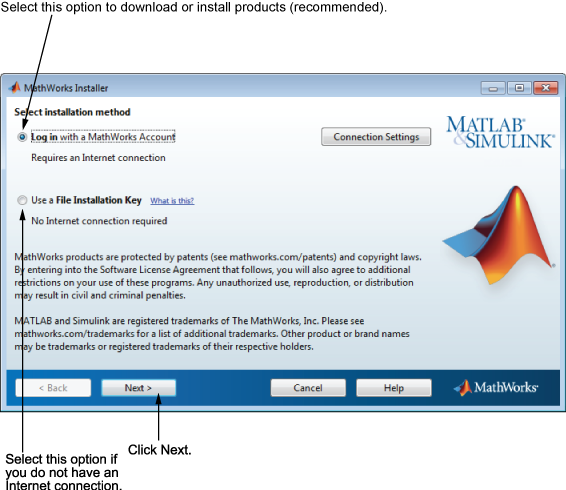
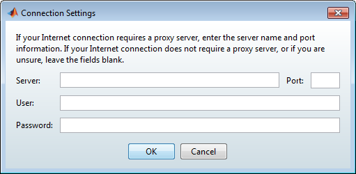

选择是要使用 MathWorks® 帐户进行安装，还是使用文件安装密钥进行安装。如果您已连接到 Internet，请保持选中“使用 MathWorks 帐户登录”选项（默认），然后点击“下一步”。安装期间，您需要登录到您的 MathWorks 帐户，选择要安装的许可证，并按照安装程序的其他对话框中的提示进行操作。使用 MathWorks 帐户是最简单的安装方法。
如果您在安装期间未连接到 Internet，请选择“使用文件安装密钥”选项，然后点击“下一步”。

附注： 在 Windows 系统上，默认情况下安装程序使用系统代理设置。如果代理服务器要求登录，安装程序会提示您输入登录信息。 |
如果您的 Internet 连接需要代理服务器，请点击“连接设置”。可以在“连接设置”对话框中输入代理服务器的名称、端口和密码。
